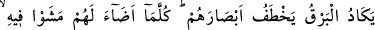
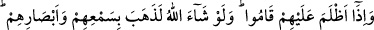

Bâzı âlimler derler ki: Gökyüzü ile onun önündeki şeffaf tabaka arasında bir ateş
vardır. Yıldırım (sâika) işte o ateşten oluşur. Ateş yerinden çıkar ve o tabakayı yırtar.
Gök gürültüsü de bu yırtılma sırasında çıkan sestir.
Bir diğer îzâha göre “Sâika” parçaları birbirine çarpınca buluttan çakan ışıktır. Veya
yerden yükselen duman ile sudan yükselen buharın parçalarından ayrılıp erimiş ağır bir
cisimdir, çok sıcaktır.
Bazılarına göre güneş, yeryüzünün kuru bir bölgesi üzerine doğunca orada ateşimsi
cüzler oluşur. Bu cüzler, bir kısım toprağımsı maddelerle birleşerek “dühân” denilen
bir duman meydana getirirler. Bu duman, buhara karışarak beraberce soğuk bir tabakaya
yükselirler. Buhar, buluta dönüşür. Dühân ise bulutun içinde kalarak tabîatı üzere devam
ettiği sürece yükselmeyi; ağırlaştığı takdirde alçalmayı ister. Bulut şiddetli bir şekilde
parçalanınca gök gürültüsü oluşur. Bazan şiddetli bir hareket sonucu şimşek veya
yıldırım meydana gelir.
İbn Abbas (r.a.) demiştir ki: “Gök gürültüsünü işitip;
“Gök gürültüsünün hamdettiği, meleklerin de O’nun heybetinden dolayı tesbih
ettiği, her şeye kâdir olan Allah, bütün noksan sıfatlardan münezzehtir.” diyen kişiye
yıldırım isâbet edip ölürse diyeti benim üzerime olsun.”
Rasûlullah (s.a) gök gürültüsünü ve yıldırımları işitince “Allah’ım! Bizi gazabınla
öldürme, azâbınla helâk etme ve bize bundan önce âfiyet ver.”[212] diye duâ ederdi. Bu
açıklama, Şeyh’in Tefsîr’inde ve Şerhü’ş-Şir’a isimli eserde yer almaktadır.
“İhata”; bir şeyi bütün yönlerinden kuşatmak demektir. Bu Allah Teâlâ hakkında
mecâzen kullanılmıştır. Yâni “Allah Teâlâ ilmi ve kudreti ile kâfirleri kuşatmıştır.”
demektir. Kat’iyyen O’nun kuşatmasından kendilerini kurtaramazlar. Kıyâmet günü
Allah (c.c.), onları toplayacak ve amellerinin cezâsını verecektir.
“Allah kâfirleri kuşatmıştır.” cümlesi uyarıcı bir ara cümle olup, münâfık ve
kâfirlerin, parmaklarıyla kulaklarını tıkamalarının, onlara gelecek belâ ve
musîbetlerden hiçbir şeyi bertaraf edemeyeceğini bildirmektedir. Çünkü sakınma ve
çâre Allah’ın kaderini değiştirmez.
Yağmura tutulan kimselere âid olan zamîr yerine “kâfirler” ifâdesinin kullanılması,
onları başına gelen bu korkunç musîbetin sebebinin küfürleri olduğunu ifâde etmek
içindir.
20. (O esnâda) şimşek sanki gözlerini çıkaracakmış gibi çakar, onlar için etrafı